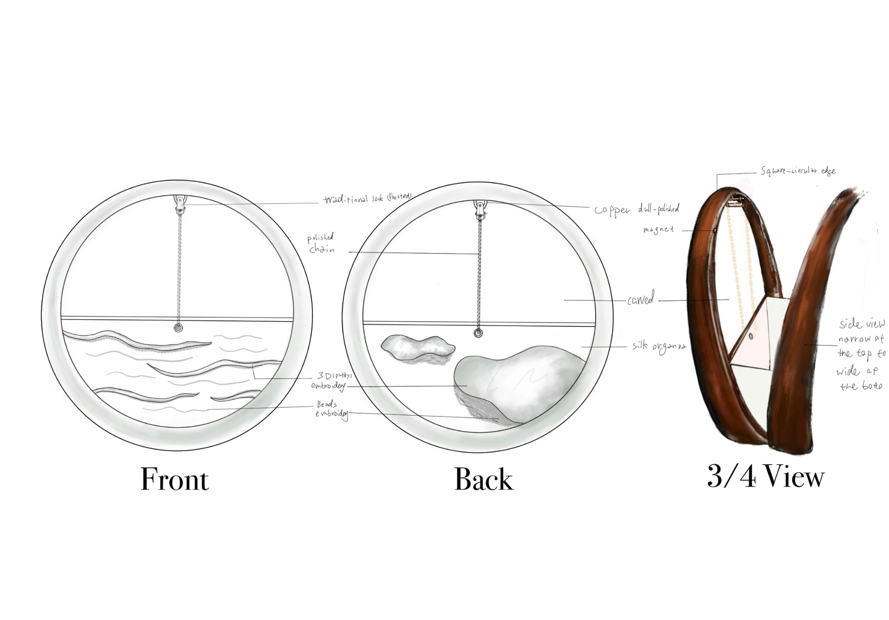
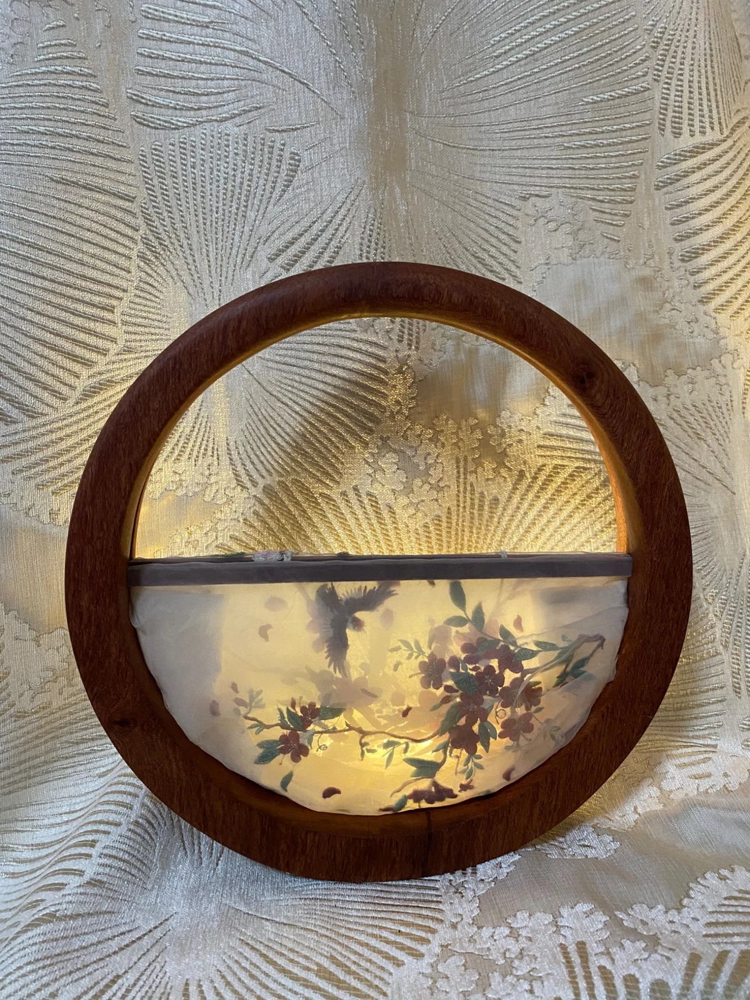
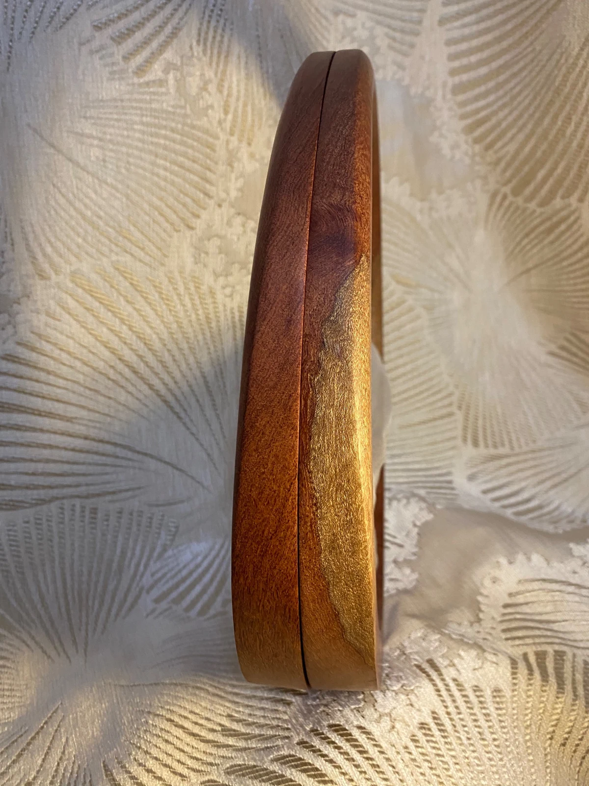
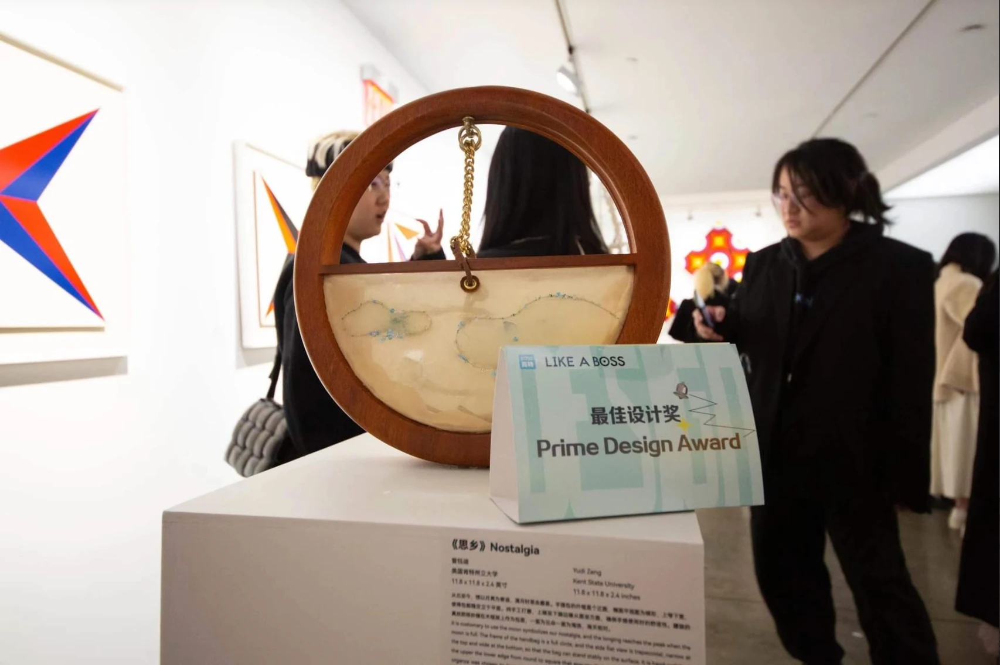
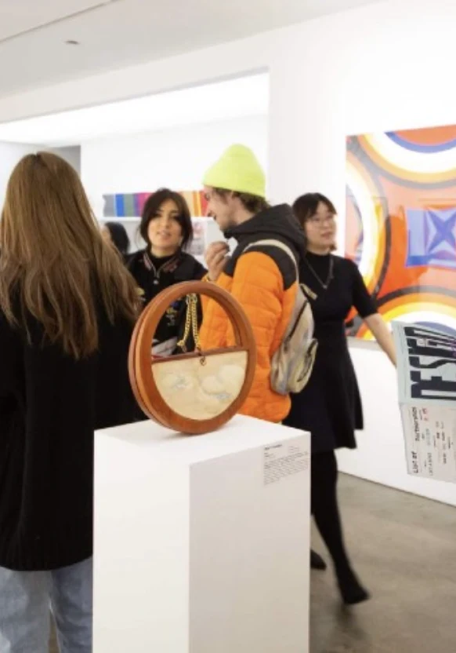

OBJECT DESIGN / HANDBAG
Nostalgia
Design study

From drawing to object
A second interpretation

Design variation
The circular wooden structure is carried through in a second version, with a different embroidered motif and translucent surface.

Exhibition record

